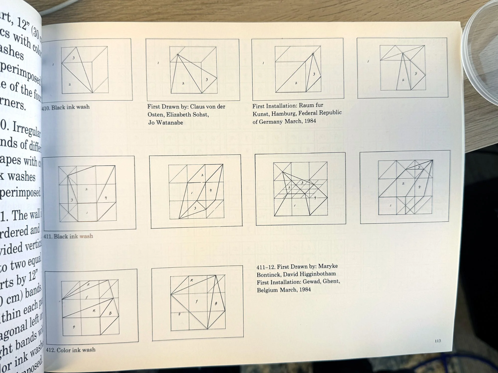
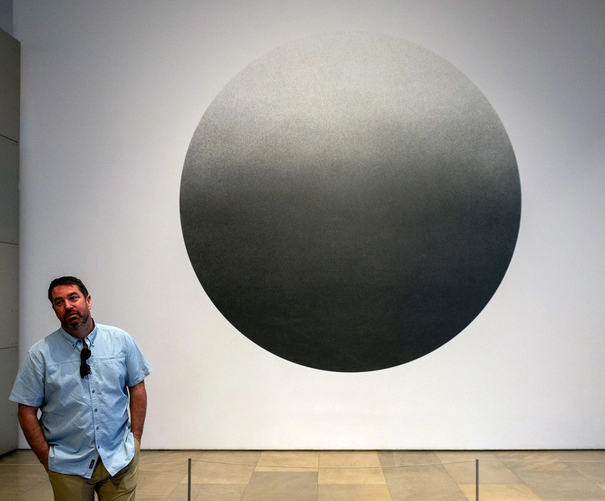
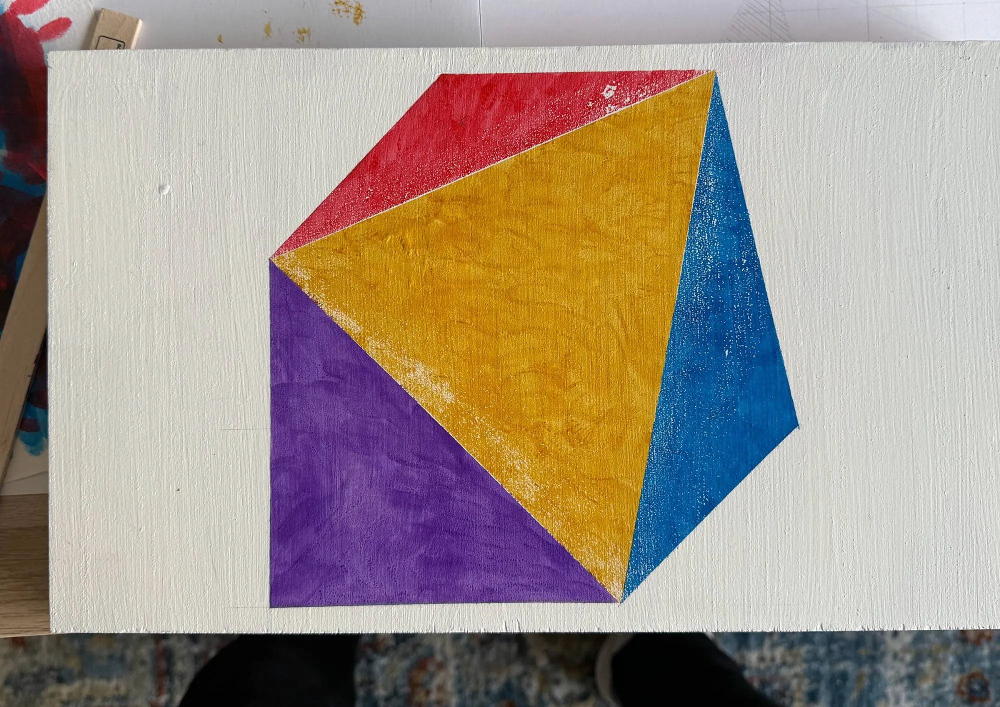
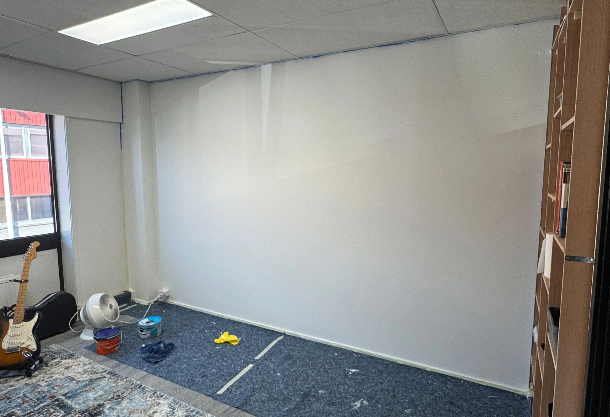
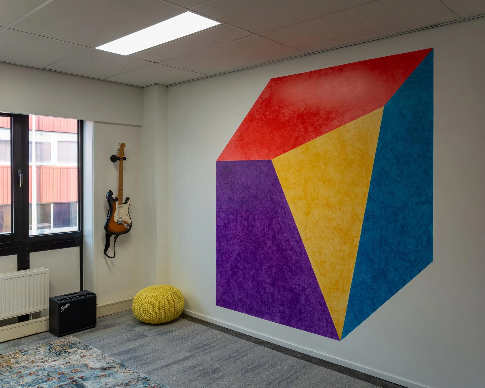
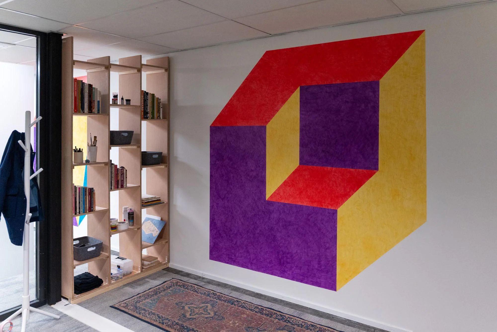

Wall Drawings
After completing the bookshelf, I started filling it. A Sol LeWitt book caught my eye. I’d bought it during a research trip for the Mona library project and always wanted to try something from it. Now I had two big walls to work with.

Diagrams from Sol LeWitt: Wall Drawings 1984-1992
I initially wanted to recreate a massive Sol LeWitt drawing I’d seen at the Phoenix Art Museum, but I couldn’t find the instructions, and decided that covering metres of wall in pencil marks would ruin me. I returned to the book.

The drawing at the Phoenix Art Museum that set this off.
What I assumed was simply acrylic paint was actually transparent ink wash, built up in layers. After a small colour test on wood prepared like the walls, I moved to full scale. Each drawing took about three days, using an art sponge smaller than a computer mouse. Slow, meditative work.

A colour test on wood, prepared like the walls.

The first wall, primed and taped off.
Three days of sponging, compressed.
There was trial and error. Removing my pencil grid burnished the first wall, leaving slightly visible traces. For the second, I measured coordinates and taped directly.

The first drawing.
The second drawing going up, measured and taped directly.
At first, I worried the handwork would look a bit naff. At scale, I started to appreciate the texture and physical effort it revealed. The drawings brought a dingy office space to life. I loved working directly on walls: spatial, architectural, and less precious. Less “I need to create a work of art”, more curiosity about what I could do with physical space.

The second drawing, beside the bookshelf.